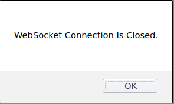

A Word About Browser Compatibility
Supported and Recommended Browsers
The recommended browser for the Scratch3 OneGPIO extensions is Google Chrome.
Firefox is also supported, but you may need to change a setting, as described in the next section.
These are the only browsers supported at this time.
SPECIAL NOTE FOR Raspberry Pi USERS: Chrome no longer supports insecure Websockets across the network. If you wish to use Chrome in the remote configuration, you must run the Scratch editor offline.
If You Wish To Use Firefox
You may use Firefox, but you will need to configure it to do so.
The OneGPIO extensions use a WebSocket connection between the browser and the WebSocket Gateway that is part of each extension server.
By default, Firefox does not allow connections to a WebSocket server. To enable Firefox to allow WebSocket connections, open the following URL
about:config
You should see a warning screen similar to that below.

Click on the I accept the risk! button.
Scroll down until you find the network.websocket.allowInsecureFromHTTPS entry and double click false to change its state to true.
Close Firefox and reopen. Scratch 3 OneGPIO should now function properly.
Trouble Shooting
WebSocket Closed Warning

If this warning pops up, make sure that you have successfully started the Python code, as described in the How To Use The OneGPIO Extensions section of this document and that it is still running.
If the warning appears after successfully starting the Python extension, please visit the Troubleshooting section for the extension you are using, and follow the instructions there.
Reporting Errors
If, after loading an extension, it is not behaving as expected, with the browser open, press the F12 key on your keyboard to expose the browser console. If you see any errors reported and are still unsure how to solve the issue, create an issue against the s3-extend distribution pasting any error output into the issue comment.
Copyright (C) 2019-2023 Alan Yorinks All Rights Reserved